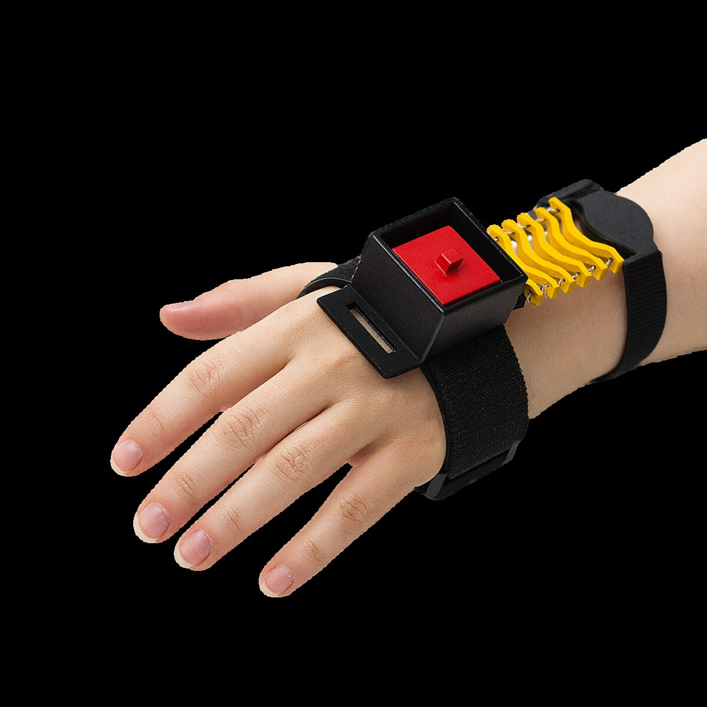
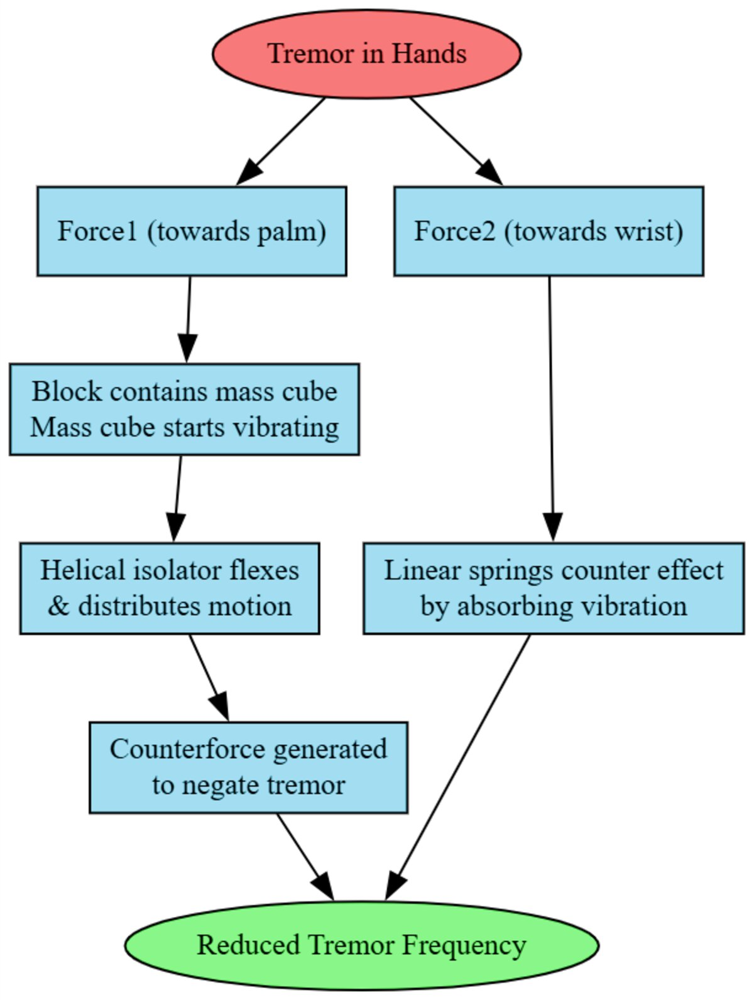

TremoFlex
Tremor-reducing wearable assistive glove

◇ PROBLEM
Essential tremor and osteoarthritis rob people of fine motor control for everyday tasks like writing, eating and holding a cup. Medication has side effects, and existing stabilisers are bulky, powered and expensive.
◈ SOLUTION
A lightweight glove with a tuned mass damper that passively counteracts tremor frequencies — mechanically smoothing hand motion, with no drugs and no power-hungry actuators.
OVERVIEW
TremoFlex places a small mass-damper module on the back of the hand. When the hand tremors, the mass cube and helical isolator generate a counterforce, while linear springs absorb vibration toward the wrist — the net effect is a reduction in tremor frequency reaching the fingers.
The concept was developed into a physical prototype with a full CAD assembly and pitch deck, focused squarely on real user needs and daily-task performance for people with essential tremor or osteoarthritis.
KEY POINTS
- Passive tuned-mass-damper stabilisation — no motors or batteries.
- Targets fine-motor tasks: writing, eating, gripping.
- Physical prototype + full CAD assembly.
- Designed around essential tremor and osteoarthritis users.
GALLERY

STACK & TOOLS
◆ Physical prototype, pitch deck and CAD assembly developed for the concept.